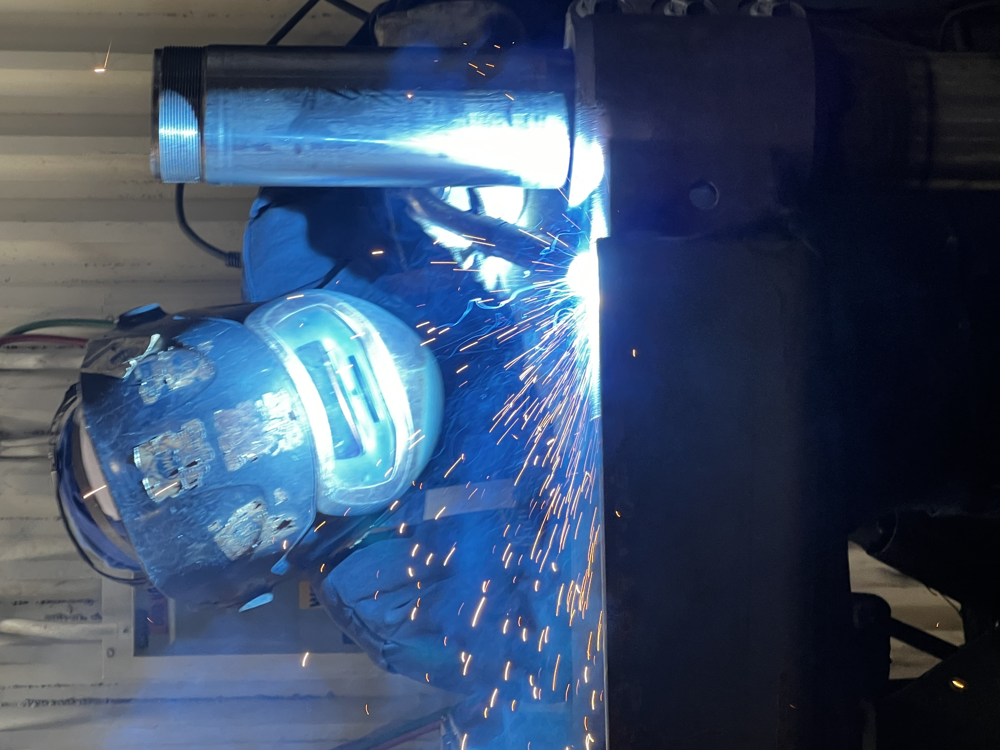

Hi, I'm Zac.
I design, build, and improve things.
Mechanical engineering student working across mechatronics, structural analysis, manufacturing improvement, and technology implementation. This site is a collection of the projects and problems I've worked on — what I did, how I approached them, and what came out of the work.
Explore projects →My experience
Selected projects
All 13 projects →UTFR Emergency Braking System
Pneumatic piston mounting, strength verification and fatigue analysis.

MIE444 Omni-Wheel Rover
Embedded control, sensing, motor drivers and power troubleshooting.

Trunnion Welding Cell
Plant layout, tooling, process flow and cycle-time improvement.
Experience
Operations Systems Intern — Collins Aerospace
May 2025 – Aug 2026
Defined requirements and prioritized the roadmap for a PowerApps analytics platform used by 100+ shop-floor users. Coordinated an improvement pipeline including 61+ closed initiatives generating $1.5M in validated savings, and developed capacity planning models to support capital investment decisions.
Mechanical Engineering Intern — Mancor Industries
Apr 2024 – Sep 2024
Redesigned manufacturing processes and layouts, reducing cycle time by approximately 20% and production footprint by 30%. Presented efficiency improvements to plant leadership.
Associate Consultant — UTCA
Jul 2026 – Present
Selected through a case-based recruitment process and trained in structured problem-solving, hypothesis-driven analysis and client communication. Banking-sector client details are not disclosed.
Brake System Member — University of Toronto Formula Racing
Sep 2024 – Apr 2025
Validated safety-critical EBS components using FEA and structural analysis, targeting a safety factor of at least 2, and evaluated mounting, yielding and fatigue performance.
Mechanical & Airframe Member — U of T Aerospace Team
Sep 2023 – Sep 2024
Designed and delivered an antenna torque-balancing subsystem and contributed to mechanical analysis and airframe manufacturing.
Student Liaison — U of T Vietnamese Students' Association
Jul 2026 – Present
Represent student feedback to executive leadership and coordinate communications for community events and initiatives.
About me
I'm studying Mechanical Engineering at the University of Toronto, with interests in mechatronics, structural mechanics, technical product work, and practical problem-solving. I like projects that bring engineering analysis into real processes and products.
Get in touch on LinkedIn